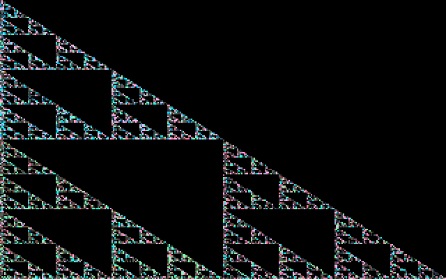
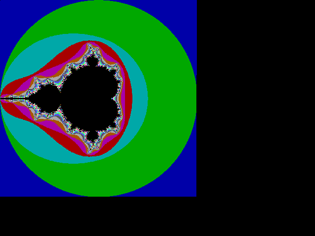
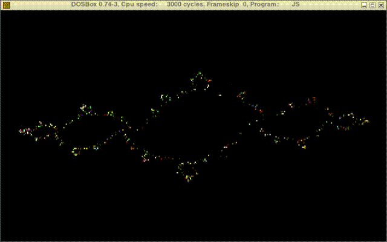
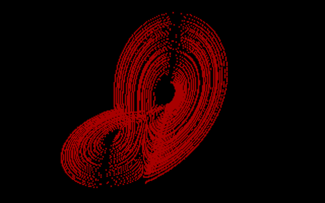

updated at 2021-05-04 by wojtek at bitologia.org (index)
fractals
In mid 90's with the advent of "fast" CPUs, fractals became an omnipresent obsession.
Source: TASM, QBasic.

Fig. 1. Sierpiński triangle as a stochastic process.
Source: TASM, QBasic. It uses integer arithmetic! (and for some unknown reasons I used MACROs instead of PROCedures...)

Fig. 2. Integer-valued Mandelbrot set. Slightly deformed, but who cares as it appears in 3 (three) seconds (not minutes!) on a 80286.
Source: TASM, QBasic.

Fig. 3. Snapshots of a dynamically generated Julia set.
Source: TASM, QBasic.

Fig. 4. Classic Lorenz attractor.